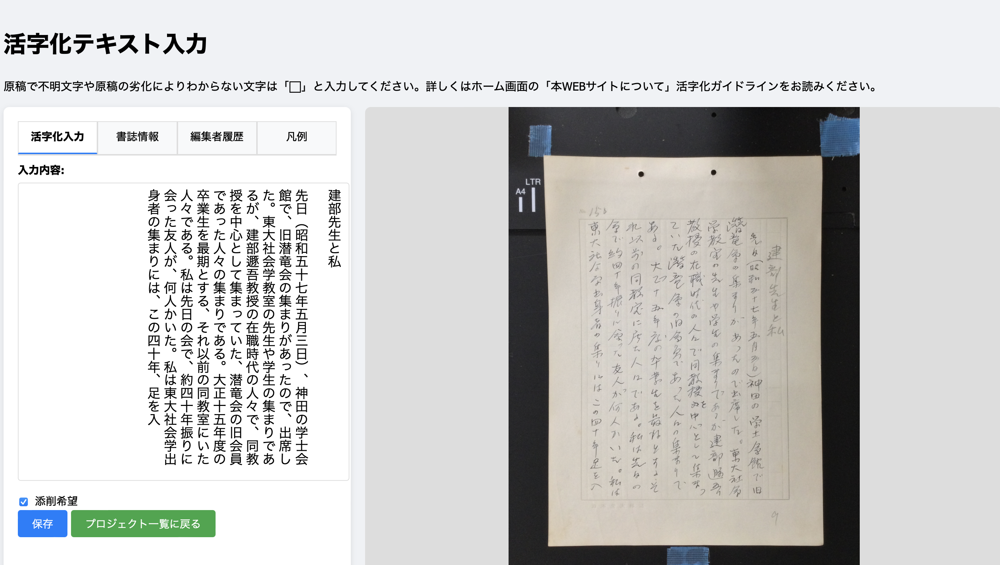

活字化ガイドライン
古い原稿には、たくさんの特殊な文字などが使われています。これらを活字化するには、一定のルールを決めておく必要があります。
活字化のサンプル

基本方針
「みんなの活字化広場」では、次の方針を原則とします。
「見たままの歴史を未来へ」
よくわからない文字や部分があっても、できるだけ活字化に挑戦してみてください。その後、他の人が修正してくれるかもしれません！誰でも参加できる活字化プロジェクトは、気軽に参加できるのが魅力です。ぜひ気軽にご参加ください！
以下では、わからない文字などの記入方法の方針を説明します。
不明文字の扱い
原稿を活字化するにつれて、古い文字や紙の劣化により文字が判読できない箇所は「⬜︎」マークで表してください。